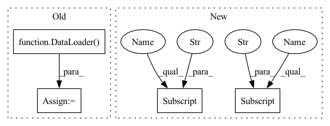

Pattern ID :6227

Before Change
train_loader = DataLoader(
dl_train, batch_size=self.batch_size, shuffle=True, num_workers=self.n_jobs, drop_last=True
)
valid_loader = DataLoader(
dl_valid, batch_size=self.batch_size, shuffle=False, num_workers=self.n_jobs, drop_last=True
)
save_path = get_or_create_path(save_path)
After Change
)
x_train, y_train = df_train["feature"], df_train["label"]
x_valid, y_valid = df_valid["feature"], df_valid["label"]
save_path = get_or_create_path(save_path)
stop_steps = 0
In pattern: SUPERPATTERN
Frequency: 5
Non-data size: 4
Instances
Fragment ID: 21632142
Project Name: microsoft/qlib
Commit Name: bee031af68cd0864c8329de13608c2d4feb58fc1
Time: 2021-07-21
Author: yl3851@uw.edu
File Name: qlib/contrib/model/pytorch_transformer.py
M Class Name: TransformerModel
N Class Name: TransformerModel
M Method Name: fit(4)
N Method Name: fit(4)
M Parent Class: Model
N Parent Class: Model
M File Name: qlib/contrib/model/pytorch_transformer.py
N File Name: qlib/contrib/model/pytorch_transformer.py
M Start Line: 151
M End Line: 162
N Start Line: 172
N End Line: 199
'>
Before Change
elif split == "valid":
sampler = SubsetSequentialSampler(val_inds) // trivial sequential sampler
// no need of shuffling when using customized sampler
dataloader = DataLoader(data, sampler=sampler, **dataloader_configs)
return dataloader
After Change
):
assert isinstance(val_size, float) and 0 <= val_size < 1
transform = DATA_INFO[dataset]["transform"]
dataloader_configs = {
"batch_size": batch_size,
"pin_memory": pin_memory,
"drop_last": drop_last,
"num_workers": num_workers
}
if dataset == "celeba":
data = DATA_INFO[dataset]["data"](root=root, split=split, transform=transform)
else:
if split == "test":
data = DATA_INFO[dataset]["data"](
root=root, train=False, download=False, transform=transform)
else:
data = DATA_INFO[dataset]["data"](
root=root, train=True, download=False, transform=transform)
if val_size == 0:
assert split == "train"
else:
train_inds, val_inds = train_val_split(dataset, val_size, random_seed)
data = Subset(data, {"train": train_inds, "valid": val_inds}[split])
dataloader_configs["sampler"] = sampler = DistributedSampler(data) if distributed else None
dataloader_configs["shuffle"] = (sampler is None) if split in {"train", "all"} else False
dataloader = DataLoader(data, **dataloader_configs)
return dataloader, sampler
'>
Fragment ID: 21632152
Project Name: tqch/ddpm-torch
Commit Name: a0e0d391e20ebf334df28e4db51fa3fad8b4771b
Time: 2022-09-13
Author: tqch2020@gmail.com
File Name: ddpm_torch/datasets.py
M Class Name: AnonimousClass
N Class Name: AnonimousClass
M Method Name: get_dataloader(10)
N Method Name: get_dataloader(9)
M Parent Class:
N Parent Class:
M File Name: ddpm_torch/datasets.py
N File Name: ddpm_torch/datasets.py
M Start Line: 176
M End Line: 199
N Start Line: 166
N End Line: 193
'>
Before Change
train_loader = DataLoader(
dl_train, batch_size=self.batch_size, shuffle=True, num_workers=self.n_jobs, drop_last=True
)
valid_loader = DataLoader(
dl_valid, batch_size=self.batch_size, shuffle=False, num_workers=self.n_jobs, drop_last=True
)
save_path = get_or_create_path(save_path)
After Change
)
x_train, y_train = df_train["feature"], df_train["label"]
x_valid, y_valid = df_valid["feature"], df_valid["label"]
save_path = get_or_create_path(save_path)
stop_steps = 0
'>
Fragment ID: 21632143
Project Name: microsoft/qlib
Commit Name: bee031af68cd0864c8329de13608c2d4feb58fc1
Time: 2021-07-21
Author: yl3851@uw.edu
File Name: qlib/contrib/model/pytorch_localformer.py
M Class Name: LocalformerModel
N Class Name: LocalformerModel
M Method Name: fit(4)
N Method Name: fit(4)
M Parent Class: Model
N Parent Class: Model
M File Name: qlib/contrib/model/pytorch_localformer.py
N File Name: qlib/contrib/model/pytorch_localformer.py
M Start Line: 154
M End Line: 165
N Start Line: 173
N End Line: 200
'>
Before Change
dl_train.config(fillna_type="ffill+bfill") // process nan brought by dataloader
dl_valid.config(fillna_type="ffill+bfill") // process nan brought by dataloader
train_loader = DataLoader(
dl_train, batch_size=self.batch_size, shuffle=True, num_workers=self.n_jobs, drop_last=True
)
valid_loader = DataLoader(
dl_valid, batch_size=self.batch_size, shuffle=False, num_workers=self.n_jobs, drop_last=True
)
After Change
data_key=DataHandlerLP.DK_L,
)
x_train, y_train = df_train["feature"], df_train["label"]
x_valid, y_valid = df_valid["feature"], df_valid["label"]
save_path = get_or_create_path(save_path)
'>
Fragment ID: 21632156
Project Name: microsoft/qlib
Commit Name: bee031af68cd0864c8329de13608c2d4feb58fc1
Time: 2021-07-21
Author: yl3851@uw.edu
File Name: qlib/contrib/model/pytorch_transformer.py
M Class Name: TransformerModel
N Class Name: TransformerModel
M Method Name: fit(4)
N Method Name: fit(4)
M Parent Class: Model
N Parent Class: Model
M File Name: qlib/contrib/model/pytorch_transformer.py
N File Name: qlib/contrib/model/pytorch_transformer.py
M Start Line: 151
M End Line: 162
N Start Line: 172
N End Line: 199
'>
Before Change
self.learning_rate = learning_rate
self.local_steps = local_steps
self.trainloader = DataLoader(train_data, self.batch_size, drop_last=True)
self.testloader = DataLoader(test_data, self.batch_size, drop_last=True)
self.trainloaderfull = DataLoader(train_data, self.batch_size, drop_last=False)
self.testloaderfull = DataLoader(test_data, self.batch_size, drop_last=False)
self.iter_trainloader = iter(self.trainloader)
After Change
self.has_BatchNorm = True
break
self.train_slow = kwargs["train_slow"]
self.send_slow = kwargs["send_slow"]
self.train_time_cost = {"num_rounds": 0, "total_cost": 0.0}
self.send_time_cost = {"num_rounds": 0, "total_cost": 0.0}
self.privacy = args.privacy
'>
Fragment ID: 21632141
Project Name: tsingz0/pfl-non-iid
Commit Name: 4f394efe04f30dbd3cab4278467631854f997903
Time: 2022-01-14
Author: 2719584131@qq.com
File Name: system/flcore/clients/clientbase.py
M Class Name: Client
N Class Name: Client
M Method Name: __init__(5)
N Method Name: __init__(11)
M Parent Class: object
N Parent Class: object
M File Name: system/flcore/clients/clientbase.py
N File Name: system/flcore/clients/clientbase.py
M Start Line: 12
M End Line: 32
N Start Line: 19
N End Line: 46
'>
Before Change
if mode == "train": // 训练集
// 常规采样
if cfg["sampler"] == "normal":
dataloader = DataLoader(
dataset,
batch_size=cfg["batch"],
shuffle=True,
num_workers=4,
pin_memory=True,
drop_last=True,
)
// 类别均衡采样（每轮重新采样）
elif cfg["sampler"] == "balance":
dataloader = DataLoader(
dataset,
After Change
assert cfg["sampler"] in ["normal", "balance", "batch_balance"]
if cfg["sampler"] == "normal": // 常规采样
sampler = None
elif cfg["sampler"] == "dataset_balance": // 数据集均衡采样
sampler = ImbalancedDatasetSampler(dataset)
elif cfg["sampler"] == "batch_balance": // batch均衡采样
sampler = samplers.MPerClassSampler(
labels=dataset.get_labels(),
length_before_new_iter=len(dataset),
'>
Fragment ID: 21632146
Project Name: bobo0810/classification
Commit Name: 2f9dfec119cad5518fc9058a3c0b299c484e5da7
Time: 2022-04-12
Author: lipengbo@kanzhun.com
File Name: DataSets/__init__.py
M Class Name: AnonimousClass
N Class Name: AnonimousClass
M Method Name: create_dataloader(2)
N Method Name: create_dataloader(2)
M Parent Class:
N Parent Class:
M File Name: DataSets/__init__.py
N File Name: DataSets/__init__.py
M Start Line: 12
M End Line: 38
N Start Line: 12
N End Line: 36